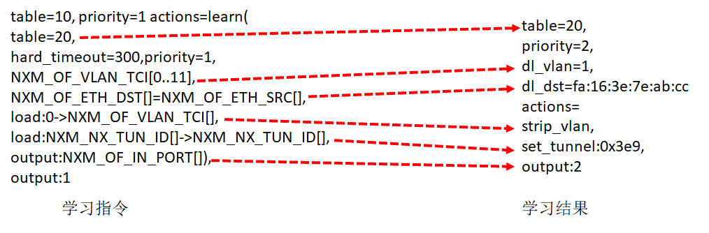

- 00 开篇词 想成为技术牛人？先搞定网络协议！.md
- 01 为什么要学习网络协议？.md
- 02 网络分层的真实含义是什么？.md
- 03 ifconfig：最熟悉又陌生的命令行.md
- 04 DHCP与PXE：IP是怎么来的，又是怎么没的？.md
- 05 从物理层到MAC层：如何在宿舍里自己组网玩联机游戏？.md
- 06 交换机与VLAN：办公室太复杂，我要回学校.md
- 07 ICMP与ping：投石问路的侦察兵.md
- 08 世界这么大，我想出网关：欧洲十国游与玄奘西行.md
- 09 路由协议：西出网关无故人，敢问路在何方.md
- 10 UDP协议：因性善而简单，难免碰到“城会玩”.md
- 11 TCP协议（上）：因性恶而复杂，先恶后善反轻松.md
- 12 TCP协议（下）：西行必定多妖孽，恒心智慧消磨难.md
- 13 套接字Socket：Talk is cheap, show me the code.md
- 14 HTTP协议：看个新闻原来这么麻烦.md
- 15 HTTPS协议：点外卖的过程原来这么复杂.md
- 16 流媒体协议：如何在直播里看到美女帅哥？.md
- 17 P2P协议：我下小电影，99%急死你.md
- 18 DNS协议：网络世界的地址簿.md
- 19 HttpDNS：网络世界的地址簿也会指错路.md
- 20 CDN：你去小卖部取过快递么？.md
- 21 数据中心：我是开发商，自己拿地盖别墅.md
- 22 VPN：朝中有人好做官.md
- 23 移动网络：去巴塞罗那，手机也上不了脸书.md
- 24 云中网络：自己拿地成本高，购买公寓更灵活.md
- 25 软件定义网络：共享基础设施的小区物业管理办法.md
- 26 云中的网络安全：虽然不是土豪，也需要基本安全和保障.md
- 27 云中的网络QoS：邻居疯狂下电影，我该怎么办？.md
- 28 云中网络的隔离GRE、VXLAN：虽然住一个小区，也要保护隐私.md
- 29 容器网络：来去自由的日子，不买公寓去合租.md
- 30 容器网络之Flannel：每人一亩三分地.md
- 31 容器网络之Calico：为高效说出善意的谎言.md
- 32 RPC协议综述：远在天边，近在眼前.md
- 33 基于XML的SOAP协议：不要说NBA，请说美国职业篮球联赛.md
- 34 基于JSON的RESTful接口协议：我不关心过程，请给我结果.md
- 35 二进制类RPC协议：还是叫NBA吧，总说全称多费劲.md
- 36 跨语言类RPC协议：交流之前，双方先来个专业术语表.md
- 37 知识串：用双十一的故事串起碎片的网络协议（上）.md
- 38 知识串：用双十一的故事串起碎片的网络协议（中）.md
- 39 知识串：用双十一的故事串起碎片的网络协议（下）.md
- 40 搭建一个网络实验环境：授人以鱼不如授人以渔.md
- 加餐1 创作故事：我是如何创作“趣谈网络协议”专栏的？.md
- 协议专栏特别福利 答疑解惑1期.md
- 协议专栏特别福利 答疑解惑2期.md
- 协议专栏特别福利 答疑解惑3期.md
- 协议专栏特别福利 答疑解惑4期.md
- 协议专栏特别福利 答疑解惑5期.md
- 结束语 放弃完美主义，执行力就是限时限量认真完成.md
28 云中网络的隔离GRE、VXLAN：虽然住一个小区，也要保护隐私
对于云平台中的隔离问题，前面咱们用的策略一直都是VLAN，但是我们也说过这种策略的问题，VLAN只有12位，共4096个。当时设计的时候，看起来是够了，但是现在绝对不够用，怎么办呢？
一种方式是修改这个协议。这种方法往往不可行，因为当这个协议形成一定标准后，千千万万设备上跑的程序都要按这个规则来。现在说改就放，谁去挨个儿告诉这些程序呢？很显然，这是一项不可能的工程。
另一种方式就是扩展，在原来包的格式的基础上扩展出一个头，里面包含足够用于区分租户的ID，外层的包的格式尽量和传统的一样，依然兼容原来的格式。一旦遇到需要区分用户的地方，我们就用这个特殊的程序，来处理这个特殊的包的格式。
这个概念很像咱们[第22讲]讲过的隧道理论，还记得自驾游通过摆渡轮到海南岛的那个故事吗？在那一节，我们说过，扩展的包头主要是用于加密的，而我们现在需要的包头是要能够区分用户的。
底层的物理网络设备组成的网络我们称为Underlay网络，而用于虚拟机和云中的这些技术组成的网络称为Overlay网络，这是一种基于物理网络的虚拟化网络实现。这一节我们重点讲两个Overlay的网络技术。
GRE
第一个技术是GRE，全称Generic Routing Encapsulation，它是一种IP-over-IP的隧道技术。它将IP包封装在GRE包里，外面加上IP头，在隧道的一端封装数据包，并在通路上进行传输，到另外一端的时候解封装。你可以认为Tunnel是一个虚拟的、点对点的连接。
从这个图中可以看到，在GRE头中，前32位是一定会有的，后面的都是可选的。在前4位标识位里面，有标识后面到底有没有可选项？这里面有个很重要的key字段，是一个32位的字段，里面存放的往往就是用于区分用户的Tunnel ID。32位，够任何云平台喝一壶的了！
下面的格式类型专门用于网络虚拟化的GRE包头格式，称为NVGRE，也给网络ID号24位，也完全够用了。
除此之外，GRE还需要有一个地方来封装和解封装GRE的包，这个地方往往是路由器或者有路由功能的Linux机器。
使用GRE隧道，传输的过程就像下面这张图。这里面有两个网段、两个路由器，中间要通过GRE隧道进行通信。当隧道建立之后，会多出两个Tunnel端口，用于封包、解封包。
-
主机A在左边的网络，IP地址为192.168.1.102，它想要访问主机B，主机B在右边的网络，IP地址为192.168.2.115。于是发送一个包，源地址为192.168.1.102，目标地址为192.168.2.115。因为要跨网段访问，于是根据默认的default路由表规则，要发给默认的网关192.168.1.1，也即左边的路由器。
-
根据路由表，从左边的路由器，去192.168.2.0/24这个网段，应该走一条GRE的隧道，从隧道一端的网卡Tunnel0进入隧道。
-
在Tunnel隧道的端点进行包的封装，在内部的IP头之外加上GRE头。对于NVGRE来讲，是在MAC头之外加上GRE头，然后加上外部的IP地址，也即路由器的外网IP地址。源IP地址为172.17.10.10，目标IP地址为172.16.11.10，然后从E1的物理网卡发送到公共网络里。
-
在公共网络里面，沿着路由器一跳一跳地走，全部都按照外部的公网IP地址进行。
-
当网络包到达对端路由器的时候，也要到达对端的Tunnel0，然后开始解封装，将外层的IP头取下来，然后根据里面的网络包，根据路由表，从E3口转发出去到达服务器B。
从GRE的原理可以看出，GRE通过隧道的方式，很好地解决了VLAN ID不足的问题。但是，GRE技术本身还是存在一些不足之处。
首先是Tunnel的数量问题。GRE是一种点对点隧道，如果有三个网络，就需要在每两个网络之间建立一个隧道。如果网络数目增多，这样隧道的数目会呈指数性增长。

其次，GRE不支持组播，因此一个网络中的一个虚机发出一个广播帧后，GRE会将其广播到所有与该节点有隧道连接的节点。
另外一个问题是目前还是有很多防火墙和三层网络设备无法解析GRE，因此它们无法对GRE封装包做合适地过滤和负载均衡。
VXLAN
第二种Overlay的技术称为VXLAN。和三层外面再套三层的GRE不同，VXLAN则是从二层外面就套了一个VXLAN的头，这里面包含的VXLAN ID为24位，也够用了。在VXLAN头外面还封装了UDP、IP，以及外层的MAC头。

VXLAN作为扩展性协议，也需要一个地方对VXLAN的包进行封装和解封装，实现这个功能的点称为VTEP（VXLAN Tunnel Endpoint）。
VTEP相当于虚拟机网络的管家。每台物理机上都可以有一个VTEP。每个虚拟机启动的时候，都需要向这个VTEP管家注册，每个VTEP都知道自己上面注册了多少个虚拟机。当虚拟机要跨VTEP进行通信的时候，需要通过VTEP代理进行，由VTEP进行包的封装和解封装。
和GRE端到端的隧道不同，VXLAN不是点对点的，而是支持通过组播的来定位目标机器的，而非一定是这一端发出，另一端接收。
当一个VTEP启动的时候，它们都需要通过IGMP协议。加入一个组播组，就像加入一个邮件列表，或者加入一个微信群一样，所有发到这个邮件列表里面的邮件，或者发送到微信群里面的消息，大家都能收到。而当每个物理机上的虚拟机启动之后，VTEP就知道，有一个新的VM上线了，它归我管。

如图，虚拟机1、2、3属于云中同一个用户的虚拟机，因而需要分配相同的VXLAN ID=101。在云的界面上，就可以知道它们的IP地址，于是可以在虚拟机1上ping虚拟机2。
虚拟机1发现，它不知道虚拟机2的MAC地址，因而包没办法发出去，于是要发送ARP广播。

ARP请求到达VTEP1的时候，VTEP1知道，我这里有一台虚拟机，要访问一台不归我管的虚拟机，需要知道MAC地址，可是我不知道啊，这该咋办呢？
VTEP1想，我不是加入了一个微信群么？可以在里面@all 一下，问问虚拟机2归谁管。于是VTEP1将ARP请求封装在VXLAN里面，组播出去。
当然在群里面，VTEP2和VTEP3都收到了消息，因而都会解开VXLAN包看，里面是一个ARP。
VTEP3在本地广播了半天，没人回，都说虚拟机2不归自己管。
VTEP2在本地广播，虚拟机2回了，说虚拟机2归我管，MAC地址是这个。通过这次通信，VTEP2也学到了，虚拟机1归VTEP1管，以后要找虚拟机1，去找VTEP1就可以了。

VTEP2将ARP的回复封装在VXLAN里面，这次不用组播了，直接发回给VTEP1。
VTEP1解开VXLAN的包，发现是ARP的回复，于是发给虚拟机1。通过这次通信，VTEP1也学到了，虚拟机2归VTEP2管，以后找虚拟机2，去找VTEP2就可以了。
虚拟机1的ARP得到了回复，知道了虚拟机2的MAC地址，于是就可以发送包了。
虚拟机1发给虚拟机2的包到达VTEP1，它当然记得刚才学的东西，要找虚拟机2，就去VTEP2，于是将包封装在VXLAN里面，外层加上VTEP1和VTEP2的IP地址，发送出去。
网络包到达VTEP2之后，VTEP2解开VXLAN封装，将包转发给虚拟机2。
虚拟机2回复的包，到达VTEP2的时候，它当然也记得刚才学的东西，要找虚拟机1，就去VTEP1，于是将包封装在VXLAN里面，外层加上VTEP1和VTEP2的IP地址，也发送出去。
网络包到达VTEP1之后，VTEP1解开VXLAN封装，将包转发给虚拟机1。

有了GRE和VXLAN技术，我们就可以解决云计算中VLAN的限制了。那如何将这个技术融入云平台呢？
还记得将你宿舍里面的情况，所有东西都搬到一台物理机上那个故事吗？

虚拟机是你的电脑，路由器和DHCP Server相当于家用路由器或者寝室长的电脑，外网网口访问互联网，所有的电脑都通过内网网口连接到一个交换机br0上，虚拟机要想访问互联网，需要通过br0连到路由器上，然后通过路由器将请求NAT后转发到公网。
接下来的事情就惨了，你们宿舍闹矛盾了，你们要分成三个宿舍住，对应上面的图，你们寝室长，也即路由器单独在一台物理机上，其他的室友也即VM分别在两台物理机上。这下把一个完整的br0一刀三断，每个宿舍都是单独的一段。
可是只有你的寝室长有公网口可以上网，于是你偷偷在三个宿舍中间打了一个隧道，用网线通过隧道将三个宿舍的两个br0连接起来，让其他室友的电脑和你寝室长的电脑，看起来还是连到同一个br0上，其实中间是通过你隧道中的网线做了转发。
为什么要多一个br1这个虚拟交换机呢？主要通过br1这一层将虚拟机之间的互联和物理机机之间的互联分成两层来设计，中间隧道可以有各种挖法，GRE、VXLAN都可以。
使用了OpenvSwitch之后，br0可以使用OpenvSwitch的Tunnel功能和Flow功能。
OpenvSwitch支持三类隧道：GRE、VXLAN、IPsec_GRE。在使用OpenvSwitch的时候，虚拟交换机就相当于GRE和VXLAN封装的端点。
我们模拟创建一个如下的网络拓扑结构，来看隧道应该如何工作。

三台物理机，每台上都有两台虚拟机，分别属于两个不同的用户，因而VLAN tag都得打地不一样，这样才不能相互通信。但是不同物理机上的相同用户，是可以通过隧道相互通信的，因而通过GRE隧道可以连接到一起。
接下来，所有的Flow Table规则都设置在br1上，每个br1都有三个网卡，其中网卡1是对内的，网卡2和3是对外的。
下面我们具体来看Flow Table的设计。

1.Table 0是所有流量的入口，所有进入br1的流量，分为两种流量，一个是进入物理机的流量，一个是从物理机发出的流量。
从port 1进来的，都是发出去的流量，全部由Table 1处理。
ovs-ofctl add-flow br1 "hard_timeout=0 idle_timeout=0 priority=1 in_port=1 actions=resubmit(,1)"
从port 2、3进来的，都是进入物理机的流量，全部由Table 3处理。
ovs-ofctl add-flow br1 "hard_timeout=0 idle_timeout=0 priority=1 in_port=2 actions=resubmit(,3)"
ovs-ofctl add-flow br1 "hard_timeout=0 idle_timeout=0 priority=1 in_port=3 actions=resubmit(,3)"
如果都没匹配上，就默认丢弃。
ovs-ofctl add-flow br1 "hard_timeout=0 idle_timeout=0 priority=0 actions=drop"
2.Table 1用于处理所有出去的网络包，分为两种情况，一种是单播，一种是多播。
对于单播，由Table 20处理。
ovs-ofctl add-flow br1 "hard_timeout=0 idle_timeout=0 priority=1 table=1 dl_dst=00:00:00:00:00:00/01:00:00:00:00:00 actions=resubmit(,20)"
对于多播，由Table 21处理。
ovs-ofctl add-flow br1 "hard_timeout=0 idle_timeout=0 priority=1 table=1 dl_dst=01:00:00:00:00:00/01:00:00:00:00:00 actions=resubmit(,21)"
3.Table 2是紧接着Table1的，如果既不是单播，也不是多播，就默认丢弃。
ovs-ofctl add-flow br1 "hard_timeout=0 idle_timeout=0 priority=0 table=2 actions=drop"
4.Table 3用于处理所有进来的网络包，需要将隧道Tunnel ID转换为VLAN ID。
如果匹配不上Tunnel ID，就默认丢弃。
ovs-ofctl add-flow br1 "hard_timeout=0 idle_timeout=0 priority=0 table=3 actions=drop"
如果匹配上了Tunnel ID，就转换为相应的VLAN ID，然后跳到Table 10。
ovs-ofctl add-flow br1 "hard_timeout=0 idle_timeout=0 priority=1 table=3 tun_id=0x1 actions=mod_vlan_vid:1,resubmit(,10)"
ovs-ofctl add-flow br1 "hard_timeout=0 idle_timeout=0 priority=1 table=3 tun_id=0x2 actions=mod_vlan_vid:2,resubmit(,10)"
5.对于进来的包，Table 10会进行MAC地址学习。这是一个二层交换机应该做的事情，学习完了之后，再从port 1发出去。
ovs-ofctl add-flow br1 "hard_timeout=0 idle_timeout=0 priority=1 table=10 actions=learn(table=20,priority=1,hard_timeout=300,NXM_OF_VLAN_TCI[0..11],NXM_OF_ETH_DST[]=NXM_OF_ETH_SRC[],load:0->NXM_OF_VLAN_TCI[],load:NXM_NX_TUN_ID[]->NXM_NX_TUN_ID[],output:NXM_OF_IN_PORT[]),output:1"
Table 10是用来学习MAC地址的，学习的结果放在Table 20里面。Table20被称为MAC learning table。
NXM_OF_VLAN_TCI是VLAN tag。在MAC learning table中，每一个entry都仅仅是针对某一个VLAN来说的，不同VLAN的learning table是分开的。在学习结果的entry中，会标出这个entry是针对哪个VLAN的。
NXM_OF_ETH_DST[]=NXM_OF_ETH_SRC[]表示，当前包里面的MAC Source Address会被放在学习结果的entry里的dl_dst里。这是因为每个交换机都是通过进入的网络包来学习的。某个MAC从某个port进来，交换机就应该记住，以后发往这个MAC的包都要从这个port出去，因而源MAC地址就被放在了目标MAC地址里面，因为这是为了发送才这么做的。
load:0->NXM_OF_VLAN_TCI[]是说，在Table20中，将包从物理机发送出去的时候，VLAN tag设为0，所以学习完了之后，Table 20中会有actions=strip_vlan。
load:NXM_NX_TUN_ID[]->NXM_NX_TUN_ID[]的意思是，在Table 20中，将包从物理机发出去的时候，设置Tunnel ID，进来的时候是多少，发送的时候就是多少，所以学习完了之后，Table 20中会有set_tunnel。
output:NXM_OF_IN_PORT[]是发送给哪个port。例如是从port 2进来的，那学习完了之后，Table 20中会有output:2。

所以如图所示，通过左边的MAC地址学习规则，学习到的结果就像右边的一样，这个结果会被放在Table 20里面。
6.Table 20是MAC Address Learning Table。如果不为空，就按照规则处理；如果为空，就说明没有进行过MAC地址学习，只好进行广播了，因而要交给Table 21处理。
ovs-ofctl add-flow br1 "hard_timeout=0 idle_timeout=0 priority=0 table=20 actions=resubmit(,21)"
7.Table 21用于处理多播的包。
如果匹配不上VLAN ID，就默认丢弃。
ovs-ofctl add-flow br1 "hard_timeout=0 idle_timeout=0 priority=0 table=21 actions=drop"
如果匹配上了VLAN ID，就将VLAN ID转换为Tunnel ID，从两个网卡port 2和port 3都发出去，进行多播。
ovs-ofctl add-flow br1 "hard_timeout=0 idle_timeout=0 priority=1table=21dl_vlan=1 actions=strip_vlan,set_tunnel:0x1,output:2,output:3"
ovs-ofctl add-flow br1 "hard_timeout=0 idle_timeout=0 priority=1table=21dl_vlan=2 actions=strip_vlan,set_tunnel:0x2,output:2,output:3"
小结
好了，这一节就到这里了，我们来总结一下。
-
要对不同用户的网络进行隔离，解决VLAN数目有限的问题，需要通过Overlay的方式，常用的有GRE和VXLAN。
-
GRE是一种点对点的隧道模式，VXLAN支持组播的隧道模式，它们都要在某个Tunnel Endpoint进行封装和解封装，来实现跨物理机的互通。
-
OpenvSwitch可以作为Tunnel Endpoint，通过设置流表的规则，将虚拟机网络和物理机网络进行隔离、转换。
最后，给你留两个思考题。
-
虽然VXLAN可以支持组播，但是如果虚拟机数目比较多，在Overlay网络里面，广播风暴问题依然会很严重，你能想到什么办法解决这个问题吗？
-
基于虚拟机的云比较复杂，而且虚拟机里面的网卡，到物理网络转换层次比较多，有一种比虚拟机更加轻量级的云的模式，你知道是什么吗？
我们的专栏更新到第28讲，不知你掌握得如何？每节课后我留的思考题，你都有没有认真思考，并在留言区写下答案呢？我会从已发布的文章中选出一批认真留言的同学，赠送学习奖励礼券和我整理的独家网络协议知识图谱。
欢迎你留言和我讨论。趣谈网络协议，我们下期见！
© 2019 - 2023 Liangliang Lee. Powered by Vert.x and hexo-theme-book.